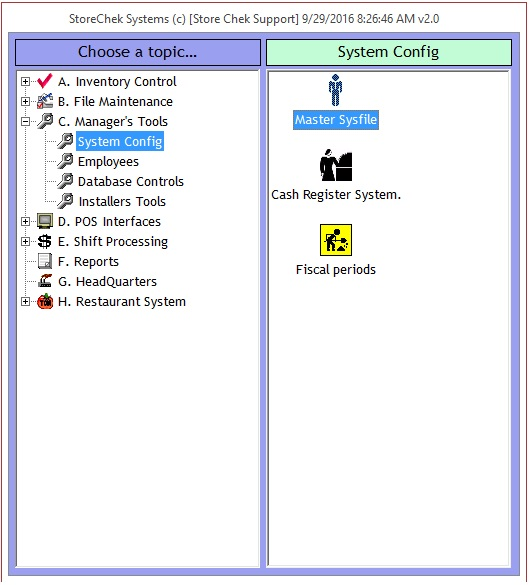

When you create transmit files they are placed in a directory specified in the Store Chek Settings. The output directory can be a disk path (ex 'C:\StoreChek\Mail\'), or UNC path (ex '\\server\share\mail\').
The output location you choose should be a reliable one. If for instance you want to get the files to a remote headquarters server that you connect to via an intermittent VPN connection, you are better off creating the files first on a local disk or network share and using some manner of daily automated script to copy these files to the remote location. This minimizes end user exposure to issues with the underlying connection. A robust transmit process could even check for and bring online a remote connection before attempting the transmit. Troubleshooting or redoing a failed transmit then only involves triggering the send process without having to get site personnel to go in and run the creation process again.
|  |